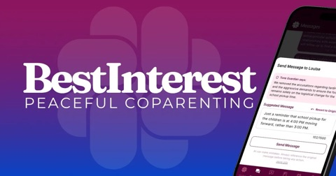
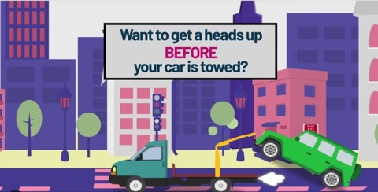
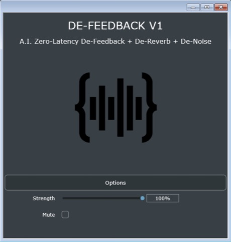
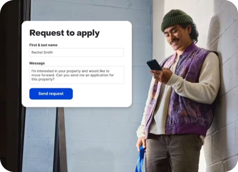
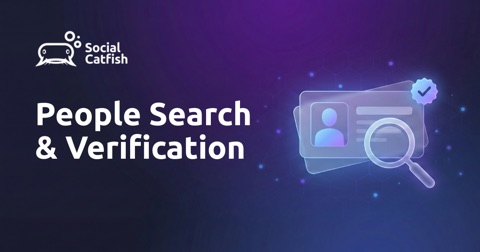
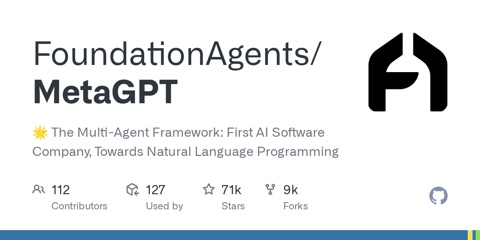
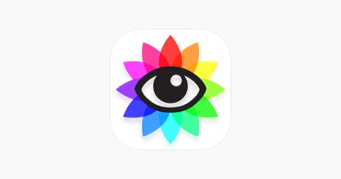
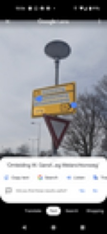
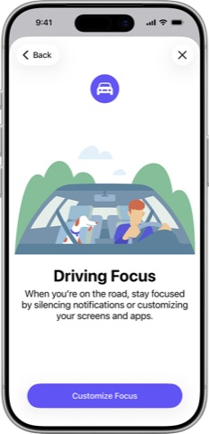

Apps, bots and code, including a few that think for themselves.
Describe a drone. Print a drone.
There is no design step. You type what you want, say a small quad a kid can fly indoors, tough enough to bounce off walls, and tick off what you already own: a radio, a printer, a box of spare motors.
Back comes a set of printable parts split to fit your printer bed, a list of what to buy, and a wiring diagram matched to your radio. Print, bolt, fly.
A bot that sits between you and a difficult ex and cleans up the messages.
Get a text warning before the ticket is written.
An AI agent that mixes live sound and kills feedback.
A bot that manages money and pays the bills.
Check your credit once and reuse the result, with no score hit each time.
A site that checks whether the person you met online is real.
A logging library where everything lands in one common table.
Software that reproduces and evolves on its own.
Run a fake project with simulated people to find the real requirements.
A machine-learning model of a person's psychiatric state.
Use quantum computers to model financial markets.
One site that hosts a page for every local Venice business.
An app that tells you what color the light is.
Crowdfunding for projects whose backers need to stay private.
Point your phone at any object and learn what it is and where to buy it.
An app that blocks texting when the phone is moving.
A family tree that keeps data local and shares only what each person permits.
A better document format than the PDF.
Let physical objects, like mirrors and light, do the computing.
Somebody got there. These are real products and services that do what the idea does. Checked November 2026. Pictures come from the makers' own pages, or from Wikipedia.









Concept art only.